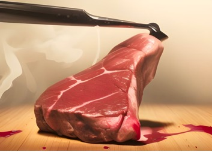
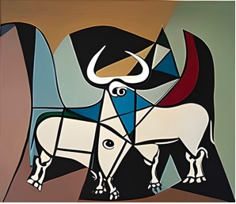

Temp Fest Project [Everything]
Esta es la
colección de la fiesta de la temperatura, una fiesta que nunca
"ocurrió", porque no era legal. Quizá hubo botellón, pero fuera del
Matadero Madrid. En cualquier caso es una historia de frustración pero también
de aprendizaje. El objetivo nunca fue la fiesta en sí, que sólo fue una excusa
para otros fines, como emborrachar a los participantes para que fueran más
sugestionables... También hay "proyectos" que no representan
proyectos artísticos u obras de arte, sino otro tipo de fracasos. Aquí hay NFTS,
IA, política, fiesta, vodka, flamenco, huevos, pollitos, toros, paja, carne
(nació en el Matadero de Madrid), esqueletos, cementerio, sal, hostias de
mentol, potajes, camas, habitaciones, velas, ranas, icebergs, hielo,
mantequilla, mafia y contrabando, túneles, gasoductos, actas de constitución,
AK-47, noterrorismo, libros, Amazonas, Amazon, y emociones y confesiones varias
(un poco de salseo). Es decir, tiene de todo un poco, pero nada ilegal (creo).
Tampoco se mataron animales. Ni siquiera árboles: la mayoría de estos son
proyectos que ni siquiera dejaron fósiles de papel».
ESTOS NFTS SE PUEDEN VER (NO ESTÁN EN VENTA) EN OPENSEA.IO
1. Temp Fest 1st Edition. The
temperature festival. The party that never "occurred".
Temp Fest 1st Edition. The
temperature festival. The party that never "occurred".
Temp Fest 1st Edition. El festival de la
temperatura. La fiesta que nunca "fue".
Esta es la web de una fiesta que no llegó a
celebrarse de manera oficial porque no era legal. Quizás hubo botellón, pero
fuera de la instalación de Matadero Madrid. En cualquier caso es una historia
de frustración pero también de aprendizaje. Esta web recoge la mayoría de
piezas performáticas y artísticas que no llegaron a ser durante el taller de lo
Sublime Metabólico dentro del grupo de la re-estética empírica. Una experiencia
magnífica, pese la no-fiesta en el interior de las instalaciones. El objetivo nunca
fue la fiesta en sí (que tampoco pasaría nada por un poco de fiesta en un
centro de creación contemporánea como es Matadero), que solo era la excusa para
otros fines (como emborrachar a los participantes para que suscribieran un
Manifiesto (para una nueva ética y relación más sostenible con la temperatura),
una constitución de una asociación no ilícita (?), o suscribieran la
participación el proyecto de entrepreneurship vodkaputin.com en kickstarter), o
se inscribieran (o sucumbieran al ritual bautismal) en una nueva secta
religiosa laica . Sigue
la historia si quieres.
2.
CEMETERY OF CREATURES AND DETRITUS OF GROUP DYNAMICS
CEMENTERIO DE CRIATURAS Y DESTRUCTOS DE LA DINÁMICA DE GRUPO
Me gusta la relación ambivalente entre las posibilidades
creativas de las acciones y talleres colectivos, prácticas artísticas grupales,
etcétera, porque tanto te ayudan a crear formas que de otro modo sería
imposible, como también te frustran con tus intenciones primeras al no recibir
el agrado del resto para tirarlas adelante.
Por ejemplo, si no hubiera sido frenado por la acción colectiva
que tan creativa es en la ideación, pues me habría atrevido a crear la acción
performática de curación colectiva de huevos para dar a luz pollitos de índole
diversa. Esto podía ser una práctica artística realizada en el Centro Cultural
y de Arte de Matadero de Madrid: que me hacía más gracia todavía hacer por dar
vida en un lugar donde anteriormente había muerte animal.
Ahora Matadero de Madrid no ejecuta inocentes animales, sino que
se ha convertido en un espacio para la reflexión y la generación de ideas sin
límites, pero a costa de la ejecución, que se puede ver limitada (aunque eso
depende de las habilidades de los coordinadores en la gestión de dinámica de grupos).
Lo que no sería necesariamente un problema porque más nos conviene pensar y
menos producir por producir sin sentido. Además, es como comparar una dictadura
con una democracia, que pese sus inconvenientes, yo prefiero la frustración
temporal de las democracias, que la eficacia sin esperanza de las dictaduras
(si eres de los loosers).
También hay "proyectos" que no representan proyectos
de actuaciones artísticas ni obras, o ponencias o presentaciones de trabajos
más o menos frustradas (o recortadas), sino intentos de peticiones de perdón o
confesiones que no fueron entregados de un modo completo. Es todo un monumento
digital al fracaso más absoluto.
3. ADVERTENCIA DE LA TEMPERATURE PARTY.
ADVERTENCIA DE LA TEMPERATURE PARTY. Esto es una
fiesta de la temperatura, pero no implica necesariamente que haya que generar
altas temperaturas debido a un contenido erótico. No obstante, con el debido
respeto a los cuerpos y cuerpas de los demás, todo el mundo es libre de
situarse como quiera respecto su cuerpo. Hay que tener presente que se pueden
rociar líquidos bautismales como el Vodka, como símbolo de reconciliación entre
aquello que a veces se opone: el frío y el calor, la naturaleza y la cultura…
4. VODKA PUTIN
Realizando unas prácticas artísticas de carácter colectivo en mi
condición de promotor del proyecto de «la Reestética» en su modalidad de la
«Re-estética Empírica», causó furor una imagen que tenía de Putin para
significar que fue él quien nos despertó («PUTIN WOKE US») de nuestra comodidad
y zona de confort en relación a la temperatura, y a su regulación artificial.
Además, durante estas prácticas artísticas, a partir de un brainstorming, me di
cuenta de que hay algunos elementos que son ambivalentes en relación a la
temperatura, según el sentido del que se trate: por ejemplo, el rayo
normalmente se ve o contempla cuando el ambiente se enfría (aunque no siempre),
pero, en cambio, cuando desafortunadamente se toca un rayo, uno se quema
gravemente; también ocurre con los cuerpos humanos desnudos, que puede que la
persona en ese estado sienta frío, pero que, en cambio, quien lo contemple
puede tener calores; y un tercer caso sería el vodka, que normalmente se sirve
frío y cuando se lo contempla, denota frío, pero cuando se ingiere, puede
producir quemazón (al menos en su forma pura).
Uniendo el Vodka con Putin, es como emergió este proyecto,
inicialmente artístico, pero que pretende ser solidario para las víctimas de
ese criminal de guerra. Víctimas que pueden ser tanto ucranianas como rusas.
El proyecto consiste en confeccionar 3.000 botellas de edición
limitada de distintos licores y sustancias alcohólicas (pero no exclusivamente
de Vodka), que aunque sean bellas y tengan un carácter artístico, y se utilicen
principalmente como arte objetual, sirven para financiar proyectos solidarios
con esas víctimas de la guerra de Putin, pero también pueden ser funcionales y
útiles.
Además, también se pueden entregar hasta 12 pinturas con su
respectivo NFT, para coleccionistas de arte, pero tienen un precio mayor.
5. AMAZON SPONSORS THE PARTY
AMAZON SPONSORS THE PARTY Amazon paga la fiesta (espero), pero
aún no lo sabe. Advertencia: La mayoría de estos productos serán devueltos,
incluyendo el vodka, y tendrán una nueva oportunidad para vivir. Me he
apalancado en Amazon para realizar una práctica artística, porque Bezos, cuya
riqueza se debe en gran medida a la precariedad que origina, tiene fama de ser
poco filantrópico y muy agarrado, a diferencia de otros billonarios.
6. Potage & Pharmakon
Mixed Temperatures
Potage & Pharmakon of
Mixed Temperatures.
Potaje & pharmakon curador generador de una
nueva estética. La idea es generar un potaje (todavía no se ha logrado que
tenga un buen sabor y estamos en proceso) que genere estímulos fuertes para
despertar las almas dormidas durante los debates y rituales que se hagan alrededor
de la Reestética, y así seguir debatiendo sobre esta nueva ética, y en la
construcción de una religión natural.
7.
Join to the Reaesthetics Sect: a new alternative cult with its own rituals
El vodka
representa el agua vital del cuerpo y del planeta Tierra y el mentol la mente
de la naturaleza ("el mentol es mental").
Únete a la
Secta Reestética: un nuevo culto alternativo para un planeta alternativo (el
auténtico) con sus propios rituales. Comunión festiva con vodka rociado y
pulverizado y pastilla de mentol como símbolo de una nueva religión, de una
nueva secta estética, que busca reconciliar la humanidad con la naturaleza a
través del arte y la estética.
8. HOSTIAS CONSAGRADAS DE
MENTHOL
PASTILLAS DE
MENTHOL COMO HOSTIAS. Estas pastillas son como un símbolo de unión del cuerpo
con la tierra y de comunión con una nueva ética y costumbres de la temperatura,
por lo que si te las tomas te comprometes con el planeta de por vida y con la
generación de una nueva religión. Religión en su sentido original de re-ligare:
de re-ligar aquello que partía como unido y que trágicamente se rompió.
Conformar una nueva unidad de toda una comunidad con la naturaleza. Se conjunta
con el vodka rociado o pulverizado, normalmente en ambiente festivo, pero
también se puede tomar con copa o chupito, según circunstancias. Análogamente a
la eucaristía cristiana, de reunir pan y vino, como símbolos de la carne y
sangre (respectivamente) de Cristo Rey.
9. Velas con llamas indoloras para ofrendas
Espacio para la reflexión para una nueva ética y
religión, que proponga una nueva relación con la temperatura. Tendría que ir en
la parte inferior del cuarto de pirámide de Madrid Matadero (Medialab), para
recrear un santuario de lo sensible, no para el más allá, sino orientado a
sentir la más bruta y pura inmanencia.
10. Botellón Aguado Solitario Esperanzado
Botellón Aguado Solitario
Esperanzado.
[Lonely bottle surfing in
the sea awaiting reception on the other side of the ocean].
[Botella solitaria en el mar esperando recepción a
la otra orilla del océano].
Ya que la fiesta de la temperatura en el centro de
creación contemporánea de Matadero de Madrid no pudo realizarse, con vodka
incluido, tenía la intención de, por lo menos, hacer un botellón un poco aguado
en petit comité, y probablemente algo tristón, pero incluso este botellón era
de esperar que fracasara. Pero la esperanza supongo que es lo último que se
pierde. No ahora, que no tengo, sino en otro momento. Ha pasado de fiesta a
cementerio, pero a cambio, en un futuro, puede nacer una fiesta zombie, que
pude ser incluso mucho más divertida… siempre que haya alguien ahí que recoja
estas botellas del océano del Metaverso.
11. Ceremonia de graduación con reparto de diplomas de asistencia
al taller
12. RELOJ AGUAFIESTAS,
CASCADA DE ARCHIVOS

OBRA:
AGUAFIESTAS: Reloj natural de tiempo variable (hielo sobre recipiente o
palangana).
VERSIÓN:
CASCADA DE ARCHIVOS. Sepulta líquidamente aquello que no se hizo finalmente
durante el proyecto.
AGUAFIESTAS:
Reloj natural de tiempo variable (hielo sobre palangana). Este reloj fija una
fecha de caducidad indeterminada de la fiesta como lo es la de la vida misma. Y
el archivo se sitúa ad hoc para una fiesta final de proyecto como hoguera de
San Juan, pero de agua, y como solución al mal de archivo de aquello que se
inició, pero que no se terminó en el plazo establecido. La idea es colocar
debajo de un archivador abierto y agujereado, papeles de proyectos que no
fueran terminados, y dejar que el cubo de hielo vaya mojando y destruyendo los
papeles mientras dura el deshielo que marca también el ritmo de la fiesta. Es
un reloj natural de duración variable que marca el inicio y fin de una fiesta,
como solución al mal de archivo de Derrida. Es como una versión en miniatura
del reloj que marca el avance del cambio climático desde Barcelona hasta
París-Dunkerque, que no deja de ser un monumento en movimiento denominado
Punctum BCN, que también tiene una duración indeterminada en última instancia,
y que depende también del ritmo de la naturaleza.
13. +AGES: Recycled bed of thermal
sensations
+AGES: Recycled bed of
thermal sensations.
+AGES: Cama reciclada de sensaciones térmicas.
La presente es una cama reciclada situada ahí para
la generación de sensaciones térmicas, de manera que distintos estímulos puedan
llevar a producir cambios en la percepción de la temperatura mediante ilusiones
térmicas, que no tienen por qué corresponder con la realidad objetiva del
ambiente. Puede servirse cualquiera a sí mismo, o bien puede liderarse por
parte de una persona dinamizadora de la acción experiencial.
14. 1800º PHASAIT: Installation to a new
architecture and interior design
Enfoque de instalación hacia una nueva arquitectura e
interiorismo 1800º. . Si debíamos enfocarnos a la parte de la instalación, creo
que debíamos tratar de crear un proyecto que tratara de generar ilusiones
ópticas a lo grande, que adoptara rasgos lumínicos de James Turrell, pero solo
con luces LED y de bajo consumo, olores intensos pero sostenibles, y sonidos
experimentales, que contribuyan a producir un ahorro efectivo de energía
mediante alteración o hackeo de la percepción de la temperatura subjetiva. Un
prototipo de instalación que puede resumirse del siguiente modo (más claves
para el comprador):
[Obra de arte (de instalación) de una estética 1800° convertida
en prototipo de habitáculos para el tercer milenio]. La realización de un
proceso de investigación y diseño de prototipo de una instalación que sirva de
habitáculo tal que potencie las ilusiones térmicas y la conciencia de la
necesidad de suavizar la regulación artificial de la temperatura según nuestros
puntos confort ideales, para lograr un ahorro energético.
Se trata por lo tanto de la elaboración de un diseño y prototipo
de instalación (inicialmente artística, pero que puede ser realizable y
replicable a gran escala) a modo de habitáculo en el cual se integren elementos
que potencian ilusiones térmicas que permitan, por un lado, sentir un mayor
grado de confort de acuerdo con la estación del año y la temperatura exterior,
y disminuir la necesidad de regulación artificial de la temperatura para
producir un ahorro de energía (afectando no solo a la eficiencia productiva o
retentiva de lo ya producido, sino a la propia demanda). También se busca que
regule más eficazmente las necesidades lumínicas de las actividades que
realicen los sujetos en cuestión, en cada momento, así como un aviso constante
pero sutil o inconsciente, de la necesidad de una actitud responsable en
relación con el medio ambiente, recordando nuestra huella ecológica y
orientando la distribución del habitáculo a la eficiencia energética y al
reciclaje y reutilización de materiales.
15. Temperature Abstraction
Matrix
Temperature Abstraction Matrix
Lo primero que se nos ocurrió era hacer una instalación donde se
pusieran a prueba nuestros sentidos, y en especial, nuestra percepción
subjetiva de la temperatura, porque es uno de los principales temas de este
proyecto: la diferenciación entre las nociones subjetivas de la temperatura y
las nociones objetivas de la temperatura, que pudieran entrar dentro de una
norma ética universal kantiana (aunque adaptada a las necesidades y condiciones
de cada cual).
Un tipo de instalación completa podría ser lo que llamamos una
matriz de temperaturas que permitieran la abstracción de la subjetividad de las
temperaturas percibidas. Por ejemplo, un modo de hacerlo sería el siguiente:
utilizando cuatro salas, o un recorrido en una misma sala, jugando con todos
los sentidos distintos al tacto-térmico (la vista, el oído, el olfato, el
gusto, el tacto no-térmico...), para tratar de alterar la percepción subjetiva
de la temperatura supuestamente objetiva.
Al final, una derivada más sencilla de esta matriz, es lo que
desarrollamos con mayor énfasis, tratando de modificar espacios/habitaciones (1
o 2, pero no 4) con distintos tipos de elementos.
16. Temperature Sensation Box
Esta instalación estética y artística es como una
condensación de la matriz general de la abstracción de la temperatura subjetiva
y que viene a poner, en un espacio reducido, como por ejemplo, en un ataúd
reutilizado, o una caja con apariencia de confesionario (porque cabe insistir
que esto, más que una estética, es sobretodo, una nueva ética, y hasta incluso
una nueva religión), los estímulos contradictorios multisensoriales, que se
encontraban por separado en la matriz, o por lo menos, unos cuantos de ellos.
Finalmente, este proyecto se desechó provisionalmente para centrarnos en una
experiencia más abierta y fuera de los límites tan cerrados y encorsetados,
como los que implicaba una caja –más en una fase temprana de la investigación–,
y también por coherencia, porque necesitábamos obtener todos los materiales
reciclados, y no había tiempo (hubiera sido un sinsentido utilizar materiales
nuevos para generar un artefacto de consumo efímero).
Entonces este proyecto tuvo una segunda
reformulación, derivando en un espacio para la experimentación, que tendría
lugar durante el festival de la temperatura. Pero que luego, al cancelarse
este, por no autorizarse el alcohol en el recinto, se reformuló de nuevo en una
más controlada y reducida experimentación de estímulos, por separado y
combinadamente, pero improvisando tanto en forma como espacialmente.
17. Temperature Sensation Box [Pretest
Experiments]
Este es el proyecto tal y como se presentó, así
que nada más que añadir aquí. Mejor ver la documentación específica y oficia
del enlacel. No es exactamente un proyecto fallido del TempFest, ya que ha sido
el único verdadero éxito de estos proyectos, pero para mí representa el fracaso
del proyecto. No porque esté mal el resultado obtenido finalmente, al
contrario, pues me parece satisfactorio, pero simboliza únicamente la punta del
iceberg del proyecto, y oculta demasiado material que no tiene porqué ser menos
interesante si se digiere poco a poco.
18. Long Extinction Tunnel
Long Extinction Tunnel:
Tunnel of Smooth Gradient Temperature [Earth Art].
The basic idea of the
project is to make a transition from extremes of heat to cold, and vice versa,
in such a way that the exact moment in which the temperature change occurs, is
not perceived clearly or at all (ideally), by means of a very smooth gradient,
and also using the tools of the sensation box or matrix in order to generate
multisensory contradictions, and to replicate the fable of the frog that
supposedly did not perceive the alteration of the temperature of the pot in
which it was being slowly cooked without being aware of its coming death.
19.
Putingenic Nonsense Gas Pipeline (to nowhere). Gasoducto
Putinejo Sin Sentido: a ninguna parte
Putingenic Nonsense Gas
Pipeline (to nowhere).
Gasoducto Putinejo Sin Sentido (a ninguna parte).
Tubería de petróleo, agua o gas que fuera repentinamente cortada, intervenido
con graffitis explicativos de la guerra a modo de diagrama que resume variables
como muertes, temperaturas, etc. directos e indirectos del conflicto, y como
influyó en la génesis de este proyecto de la Re-Estética. Fue la amenaza de
Putin un acto de privación repentino, que pudimos sentir de un modo agudo, y
que contrasta con el proceso de privación de vida planetaria a largo plazo, que
apenas percibimos, y que refleja la otra propuesta de obra LET (Long Extinction
Tunnel), que es como una tubería que transporta personas.
20. SBM: Smoothly Boiled
Frogs
«El sexto ángel derramó su
copa sobre el gran río Eufrates; y sus aguas se secaron para que fuera
preparado el camino para los reyes del oriente. Y vi salir de la boca del
dragón, de la boca de la bestia y de la boca del falso profeta, a tres
espíritus inmundos semejantes a ranas; pues son espíritus de demonios que hacen
señales, los cuales van a los reyes de todo el mundo, a reunirlos para la
batalla del gran día del Dios Todopoderoso». Apocalipsis 16:13
Siempre me sorprendió la
fábula de las ranas que predicaba que si se incrementa suficientemente lenta la
temperatura de una olla, las ranas halladas en su interior no perciben el ritmo
del cambio de la temperatura y, por lo tanto, mueren sin percatarse de forma
indolora.
Y entonces me propuse a
realizar realmente el experimento y el resultado fue esta olla con el objetivo
final de ofrecer un banquete de ancas de ranas que en algunos países se
consideran una delicatessen. Al fin y al cabo, si no sufren, tampoco supondría
un gran dilema ético.
Más que nada porque me
gusta la simbología de las ranas porque todos nosotros somos un poco como ranas
en el planeta que estamos hirviendo, y no acabamos de reaccionar.
Encuadro esta obra en el
marco de la Re-estética Empírica, que trata de mezclar la estética (y las distintas
estéticas, especialmente las más olvidadas por parte de la estética ascética
más intelectual, como el tacto, y por qué no, el gusto, como en esta ocasión),
con la ética y la ciencia.
Además, nada se tira,
porque los restos no comestibles se utilizan para generar las huellas de muerte
del monumento en movimiento a medida que avanza de acuerdo con el ritmo del
cambio climático (el Punctum BCN).
«Pero si te niegas a
dejar-los ir, he aquí, heriré todo tu territorio con ranas». Éxodo 8:2-7
En el documental "Una
verdad incómoda" del año 2006, el ex-vicepresidente de Estados Unidos, Al
Gore, hace referencia a este fenómeno comparándolo con la situación del
Calentamiento global, explicando como la humanidad se adapta a una situación
que de forma progresiva genera un malestar mayor, y que es normalizada debido a
su carácter progresivo, ignorando que sus consecuencias resultan cada vez más
devastadoras y donde se toma conciencia del problema cuando este ya ha generado
un daño irreversible.
Además, en otra ocasión,
narré la fábula de las ranas capitalistas que, debido al VAT-Floor, una
herramienta tributaria muy potente que propongo para transicionar tanto hacia
economías neoproteccionistas como, si se abusa, hacia economías socialistas y
comunistas, y utilizaba la misma metáfora.
«Envió entre ellos
enjambres de moscas que los devoraban, y ranas que los destruían». Salmos 78:45
Las ranas siempre vuelven.
«Pululó su tierra de ranas
hasta en las alcobas de sus reyes». Salmos 105:30
PD. Para la realización de
la presente obra no ha sufrido ningún animal. En cualquier caso, comer ancas de
ranas es legal, y es ético porque no sufren.
21. LOS POLLUELOS DE TODOS: UNA PRÁCTICA ARTÍSTICA COLECTIVA DE
GENERACIÓN DE VIDA (o tragedia)
EVERYONE'S
CHICKS: A COLLECTIVE ARTISTIC PRACTICE OF LIFE GENERATION.
LOS POLLUELOS DE TODOS: UNA
PRÁCTICA ARTÍSTICA COLECTIVA DE GENERACIÓN DE VIDA
¿Qué es primero, la
Estética o el Arte? ¿La Re-estética o la Estética?¿Qué es primero, el huevo o
la gallina? Pero yo siempre me he preguntado por el gallo. ¿Qué le pasa al
gallo? Es un gran olvidado, por ponerse gallito y protagonista, que en otra
obra sacaré a relucir.. Me suscita tanta curiosidad esta cuestión, que propongo
comprar una incubadora, para estudiar la cuestión de la temperatura, para ver
la relación que hay entre la temperatura subjetiva y la objetiva para poder
cultivar la vida, y también para fortalecer la dinámica de grupo. ¿Acabará con
alegría o con tragedia?
Es una acción performática
de curación colectiva de huevos para dar a luz pollitos de índole diversa. Esto
podía ser una práctica artística realizada en el Centro Cultural y de Creación
Contemporánea de Matadero de Madrid: que me hacía más gracia todavía hacer por
dar vida en un lugar donde anteriormente había muerte animal.
Quizás habría acabado de un
modo trágico, porque no es fácil ser precisos en la temperatura que los
pollitos necesitan para dar a luz, pero es que aquí donde está la clave de por
qué esta obra podía formar parte de esta experiencia de la Reestética Empírica,
porque si nos equivocamos a la hora de determinar cuál es la temperatura
objetiva universalizable, eso puede ser catastrófico para toda la humanidad y
del planeta, y más que incubar para dar a luz, estamos creando un horno
planetario de fuego y destrucción.
Tened en cuenta que aunque
es posible fijar temperaturas o de un modo subjetivo, y poner temperatura que a
veces más alta, a veces más baja, a ojo, sin mirar los libros y sabiduría
ancestral, eso puede acabar como el rosario de la aurora, sin que eclosionen
los huevos. Eso sería trágico, quizás no en el sentido de muerte, pues
legalmente hasta que no se da a luz, un ser vivo no se considera que nazca,
pero vida en proceso destinada a nacer ya era. Y en vez de una experiencia
colectiva divertida en un taller, podría haber sido más bien algo trágico,
esperando alegría mientras se gestaba la catástrofe.
CÓMO IMPLEMENTARLO. La idea
es pedir a asistentes al centro de artes y cultural en cuestión (lo ideal es
que sea en sitios donde un grupo de personas vaya a estar un mínimo de 3-4
semanas, para que vivan todo el proceso), que gradúen la temperatura de estas
incubadoras, un poco al azar, sin mucho tiempo para pensarlo (o sí), para
cuantificar la proporción de éxito (e incluso escalarlo según el nivel de
experiencia: al primer intento, al segundo, etc.). Acertar en la temperatura
ética/objetiva es muy complicado, pero existe este óptimo de temperatura.
PS: Ya de por sí me
encantaban los huevos por todo lo que simbolizan, también por su forma ovoide u
óvala según la perspectiva (la forma del Universo), por las preguntas que
suscitan (como qué es primero, si el huevo o la gallina), y también por
contribuir a dar a luz a polluelos de diversas especies, que son muchas de
ellas también muy poderosas a nivel simbólico y así salen representadas en las
obras de arte. A veces gallinas, a veces ocas, cisnes, a veces palomas… si se
tratara de palomas blancas de acuerdo, pero si no, realmente tampoco.
PD: Banda sonora: - Yoviacé
un corrá. - Oques grasses. - El canto del cisne. - El propio canto de los
polluelos al nacer, traducidos también en pentagramas/fonogramas animales de
puntos.
22. Un montón de paja para taparse (puede arder)
Un montón de
paja para taparse (puede arder). Se trata de convertir el espacio de antiguo
Matadero de Madrid en un templo, establo, granja, santuario, mausoleo,
exposición, discoteca, dormitorio... todo a la vez.
La idea es
que los polluelos nacidos del proceso colectivo de incubación en el espacio
artístico del Medialab de Matadero Madrid puedan estar presentes en libertad
entre tanta paja.
23. Meat Meeting Point

Conjunción de 3 o 4 estímulos visuales de
naturaleza muerta. Primermaente, de un material inerte que parezca de carne, y
que aunque sea una escultura, esté caliente, y lo parece porque se ve la sangre
y como recién matada, como todavía viva y con vapor, que contraste, en cambio,
con otro trozo de carne cocida pero que esté fría y no apetezca. También se ven
restos de cajas de Matadero, en honor ad hoc al sitio específico donde nos
encontramos. Y contrasta con otro trozo de carne representado en cierto nivel
abstracto o desfigurado al estilo de Francis Bacon, y jugar con la sal como
material para contrastar con la carne sangrada (incluso dejar solo la sal gorda
manchada de sangre).
24. Shoot painting: Shoots of emic
points between 2 lines on canvas.
Shoot painting: Diana para disparos emic sobre 2
líneas en lienzo. La presente obra trata de dibujar los distintos puntos de
temperaturas subjetivos que prefieren los visitantes para el verano (marcando
el punto de refrigeración ideal) y para el invierno (marcando el punto
subjetivo de calefacción ideal en rojo). Eso se marca idealmente a través de
una pistola de paintball con pintura de esos colores, o dibujando directamente
con spray, según el contexto. Y se puede dejar tal cual el resultado
intervenido por el público, respetando los puntos que dejan los usuarios, o se
puede intervenir de un modo crítico por los artistas, corrigiendo o tratando de
destacar los errores e irracionalidades… porque las personas actuamos de un
modo irracional y no siempre somos conscientes ni suficientemente autocríticos.
25.
ACT OF CONSTITUTION OF AN ILLICIT ASSOCIATION
Uno de los proyectos que no
prosperó (afortunadamente) es el ACTO DE INCORPORACIÓN DE UNA ASOCIACIÓN
ILÍCITA, que pretendía realizar acciones de sabotaje light contra empresas e
industrias que atentaran contra el medio ambiente de un modo irracional. En
ningún caso se proponía atentar contra la vida de nadie, ni tampoco contra su
integridad física o moral.
Es, por tanto, un acta de
constitución de una asociación ilícita pero fracasada que no ha llegado a
constituirse, y yo tampoco soy un lobo solitario terrorista, sino que solo se
trataba de plantear la urgencia de tomar medidas con cierta radicalidad. Espero
que no se me persiga penalmente por una propuesta como esta porque tampoco
pretende para nada ser una apología al terrorismo. Véase más bien como una obra
de ficción porque no hay intención real de hacer daño a nadie: esta acta de
constitución imperfecta de una asociación ilícita es de carácter informativo y
pedagógico, para empezar porque ningún grupo terrorista es tan bobo de crear un
acta con sus firmas que les incrimine directamente. Seguro que habrá que lo han
hecho, pero no creo que sea lo habitual: no soy experto en cuestiones
terroristas.
26. Signing of the foundation of the Temperature Institute.
Firma del acta de constitución
de la asociación del Temperature Institute. Aunque ya redacté los potenciales
estatutos del Temperature Institute mucho antes de venir al taller de lo
Sublime Metabólico, mi intención era formar un grupo que tuviera continuidad, y
para ello era conveniente firmar un acta de constitución de asociación, que
daría personalidad jurídica al desarrollo de proyectos futuros a partir de lo
trazado en el taller. Evidentemente he fracasado rotundamente en este
propósito. Pueden ver los estatutos preliminares en el enlace del link.
27. Manifesto for a
new human relationship with temperature
Manifiesto hacia una nueva relación
con la temperatura
CONTRA Los futuristas. Los aceleracionistas.
Jeff Bezos. Los agentes contaminantes irracionales (que contaminan
absurdamente). Los agentes contaminantes acríticos (que ni siquiera piensan en
su acción contaminante).
PROPONE
- Tomar
conciencia. Muchas veces no somos conscientes de la relación que guardamos
con la temperatura: es hora de que paremos atención a este sentido tan
primordial y que cada vez va a ser más relevante.
- Lo
primero es evitar auténticas irracionalidades y paradojas, como cuando
regulamos la temperatura artificialmente en algunos hogares y oficinas, y
fijamos temperaturas óptimas más elevadas en invierno que, por ejemplo, la
que fijamos como objetivo en el aire acondicionado en verano. Más a menudo
de lo que deberíamos cometemos auténticos crímenes contra la naturaleza.
- Además,
más allá de los casos más extremos, totalmente irracionales que hay que
evitar sí o sí, hay que acostumbrarse a tener algo más de calor o frío, y
a regular la temperatura de un modo más sostenible, porque los humanos
tenemos capacidad de adaptación y siempre le hemos tenido.
- Hay
un punto de exceso de confort individual que es incompatible con su
universalización, es egoísta e solidario. Y hay que evitarlo.
- Por
todo ello hay que encontrar una regla ética kantiana en relación a la
temperatura universalizable, aunque sea adaptándose a las condiciones
fisiológicas de cada cual, pero liberándonos de aquellos factores emic y
subjetivos, que cuando causan que nuestros ideales de temperatura se alejen
de esa temperatura universalizable, se convierten en egoístas e
insostenibles, y auténticos crímenes contra la humanidad y el planeta.
- Es
hora de aplicar una solidaridad y socialismo de la temperatura, de manera
que cada cual según su capacidad fisiológica, y a cada cual según su
necesidad de temperatura, utilizando métodos científicos y objetivos. Una
equidad termal basada en criterios científicos y no utópicos.
- Es
hora de crear una nueva ciencia sobre la temperatura que tenga en cuenta
nuestra relación estética con la temperatura, las condiciones económicas
objetivas de la población y geopolíticas de los distintos países, y las
consideraciones éticas apropiadas para profundizar en una nueva relación
ética con la temperatura.
- Y lo
que aquí se dice en relación a la temperatura, lo mismo cabe decir de
nuestra relación con la luz artificial y otros privilegios que la
tecnología nos ha proporcionado. No es un drama (o no debería serlo)
quedarse a ciegas por la noche por falta de luz al depender demasiado de
las energías renovables.
- Un
mundo quizás no mejor para según quien, pero sí más sostenible y más
compatible con la mayoría de seres vivos del planeta, es posible.
- En el
fondo, todo empieza con pequeños gestos, como aflojar el termostato, que
poco a poco vayan moldeando nuestras costumbres y valores, para ir
formando un estilo de vida cada vez más postmaterialista y compatible con
la naturaleza.
28. Encerrona Temperature After Party

Encerrona
Temperature After Party. La idea de hacer la fiesta después del experimento de
distintos estímulos contradictorios en relación a la temperatura (sería el
primer propósito más empírico y experimental) no solo es por pura diversión,
que está muy bien (sería el segundo propósito), sino que hay cierto propósito
(el tercero) de emborrachar a los participantes, porque en estado de embriaguez
son más susceptibles.
Primero para
realizar la comunión y formar parte de la congregación de una nueva religión y
ética de la temperatura, que es casi secta, a través del vodka y de las
pastillas de mentol. Además, el escenario, con una plataforma de madera que
termina en una esquina con un tercio o cuarto de pirámide, no puede ser más
“iluminador” y masónico…
Y después de
esta performance o ritual más religioso, la idea es derivar los participantes
en un escritorio donde firmen algunos de los documentos que se tienen
preparados para elegir: - El manifiesto de la nueva estética de la temperatura.
- La fundación de la asociación Temperature Institute. - La contribución al capital
inicial del proyecto empresarial Vodka Putin, con un plan de lanzamiento en la
plataforma Kickstarter. - O incluso la participación en la fundación de una
asociación ilícita (así llamada: asociación ilícita), que en cualquier caso
puede ser terrorífica, pero no terrorista en el sentido de atentar contra la
vida de las personas.
29.
Act of sabotage of the heating systems
Act of sabotage of the heating systems
at Matadero.
Acto de sabotaje de los sistemas de calefacción de la nave.
No es un drama (o no debería serlo) quedarse a ciegas por la
noche por falta de luz al depender demasiado (nosotros y nuestros sistemas
actuales y futuros) de las energías renovables. Tampoco si en un centro de
trabajo lleno de gente joven, en general, se rebaja la temperatura a unos 19
grados, y si se sabotea el sistema de calefacción del edificio donde estábamos
haciendo el taller en Matadero de Madrid, durante unas pocas horas.
Realmente propuse esto, pero no recibió el apoyo de nadie del
grupo. Gente sensata. No es bueno saborear a la institución que te da de
cobijo. En realidad debería haber pedido consejo a la mentora Joana Moll, quien
se atrevió a dejar sin luz el centro de Arte Santa Mónica de Barcelona, tomando
una medida tan drástica porque no se estaban cumpliendo los objetivos de ahorro
energético que se fijaron desde las propias instituciones. Y es que solo con
medidas a media tinta nos quedamos a medio camino de poder revertir el impulso
del calentamiento global.
Es vital entender que no podemos aceptar que sea un drama tener
que prescindir de comodidades que hace tan solo 2 siglos, ni siquiera eran
imaginables. En ocasiones oigo decir que los pobres de hoy son más ricos que
los ricos de hace unos siglos, porque estos carecían de comodidades por las que
pagarían fortunas. Y en parte hay algo de razón ahí, pero entonces la cuestión
clave aquí sería que no pasa nada por dejar de disfrutar de algunas de estas
comodidades de un modo intermitente, por unos pocos momentos, horas, etcétera:
la riqueza es stock, por lo que no se pierde “esa riqueza” por carecer o dejar
de disfrutar de ella unos instantes, minutos y horas. Vivir las inclemencias
del tiempo intermitentemente tal como lo hacían nuestros antepasados, no es el
infierno (podría hacerlo en caso de que se extremaran mucho más por culpa del
cambio climático) y deberíamos de poder soportarlo (por lo menos si nos
limitamos a evitar las condiciones más extremas).
Acostumbrarse a esta desdramatización de los cortes de
suministro temporales de comodidades no debería ser un sueño, sino un proyecto
de la Humanidad a empezar prontamente. Es necesario mimetizarse con la
naturaleza para poder salvarla porque vamos en el mismo barco.
30. Sweat or tears / Sudor o lágrimas
O dejas
sudor, o dejas lágrimas. O ambas. Pero no ninguna. Con estas lágrimas y el
sudor, haremos burbujas (por ejemplo, cuando nazcan los pollitos, o cuando
mueran).
31. Stella Bulla
Instalación extendida: Stella
Bulla: Llora Homo Bulla La idea es utilizar tanto el sudor como las lágrimas
como material para realizar pompas de jabón. Se trata de una versión más
inofensiva y menos macabra, y por lo tanto más disfrutable, de la obra de la
artista mexicana Teresa Margolles. El problema no está en la vanidad del hombre
burbuja (homo bulla), sino en las sistemáticas burbujas del “sistema”, que
esconden en cada proceso de pinchazo y vuelta la carga, una fragilidad
planetaria, que la técnica ha transformado en un “planeta burbuja” (stella
bulla). [La máquina pompeadora es la Stella Bulla y la performance es «Llora
Homo Bulla»].
32. NONE CANNON, BUT BUTTER
NONE CANNON, BUT BUTTER. Melting butter on a griddle or human hand. Es un a obra de arte
pacifista, que recuerda ese debate economicista entre la producción de cañones
(armas) o mantequilla, y que reivindica a la figura de Joseph Beuys, como
precursor de un arte pre-ecologista. La idea es agarrar mantequilla
(vegetariana) y esperar a que se funda en las manos o cuerpo. Pero también vale
mantener fundida mantequilla ya fundida de origen, porque ya llegamos tarde. Es
una obra propuesta para el proyecto de la Re-estética, en el marco de los
rituales de la Temp Fest.
33. D’artiest Coup.
D’artiest Coup. La copa al
golpe más de arte.
La idea es entregar un premio consistente en
una copa que contiene un potaje curativo y purificador aquel acto artístico que
haya sido más efectivo (o que lo pueda ser en un futuro) en dar golpes a los
agentes contaminantes menos éticos, redimiendo a los “artistas” ejecutores por
sus actos más impuros, sucios y cuestionables, aunque fueran por un buen fin.
Se premia el artivismo, pero también cualquier acto artístico y obra que
pretenda la transformación de la sociedad, y la configuración de un mundo mejor.
No hace falta gala, pero se podría haber aprovechado la fiesta de la
temperatura para hacer la primera entrega.
Soy consciente de que a veces puede parecer
que el arte sea un lugar donde se envía a los activistas para tenerlos
entretenidos haciendo cosas inofensivas, que en realidad no suponen un mayor
peligro para el poder real. Pero sinceramente creo que en este dejar
"entretenidos" a gente tan creativa, que trabaja sobre los márgenes y
residuos, que otras disciplinas ignoran, deambulando sin rumbo fijo, en
proyectos sin fin, acaba generando oportunidades de germinar transformaciones
sociales desde niveles diversos. No tiene por qué ser necesariamente para
mejor, pero al fin y al cabo, tal como predice la teoría de la evolución, de la
diversidad surge la oportunidad de que surjan individuos que se adapten mejor
en un entorno constantemente en cambio, que actualmente es acelerado (mucho más
de lo que podemos soportar sin crisis multiniveles). Esta es la razón por la
que creo que merece la pena otorgar premios a los artistas que dan golpes (o
golpecitos constantes que se acumulan pacientemente sobre la estructura
esperando hasta que eventualmente se pueda fracturar algún día).
PS: Esta imagen representa a un héroe
hinduinca que tiene rasgos divinos y cuyos potajes tienen propiedades que
infunden temple, temor y humor. Hay que tomarse la copa de la sabia curativa
con la máscara del valor.
34. The rhythms and magnitudes of Nature
The
rhythms and magnitudes of Nature.
La idea no es solo generar un
nuevo monumento en movimiento alternativo al Punctum BCN, tal como se propone
en Amazonas Monument in Movement (más info en el link del NFT), sino nuevas
unidades de medida de longitud, espacio, volumen, temperatura, tiempo… más allá
del eurocentrismo y del antropocentrismo, propia de la era de la técnica contra
la naturaleza, para reconciliar la cultura humana con esta, y poder salvar así
el planeta… porque nos quedamos sin tiempo. Unidades de medida que pueden
derivarse de la propia naturaleza, como las que podríamos extraer (inducir) del
sistema amazónico.
35. Amazonas Monument
in Movement: A 4000-year-building living-sculpture
Amazonas Monument in Movement A 4000-year-building living-sculpture.
Les
propuse de hacer una versión menos etnocéntrica, es decir, menos eurocéntrica,
del monumento en movimiento vivo (“movument”) que propongo para Punctum
Barcelona.
Si
en Punctum Barcelona (véase en el link) trato de conmemorar el recorrido que se
hizo en una expedición de Dunkerque a Barcelona, pasando por París, para
establecer la medida del metro, iniciada en 1791 y acabada en 1798 (definiendo
el metro una diezmillonésima parte de la distancia entre el Polo Norte y el
ecuador en el meridiano que pasa por París, y sustanciándolo de forma concreta
en una barra, que no obstante fue reformulada en 1889 por un error de cálculo,
así como en aras de poder proporcionar un instrumento de medida realmente
replicable de un modo universal en cualquier lugar), pero incorporando una
nueva unidad de medida que se propone que represente el nivel de avance del
cambio climático, la propuesta que hago ahora es salirse de este etnocentrismo
y aprovechar que una persona del grupo era de Brasil para que el monumento
partiera desde otro lugar menos eurocéntrico… y nada como la deforestación de
la Amazonas para marcar el ritmo de avance de este monumento en movimiento,
pero en vez de ir de sur a norte, ir de sur a todavía más al sur.
El
ritmo de avance anual o periódico a determinar la frecuencia puede depender de
la misma unidad métrica que utilicé en el otro proyecto, que viene a reflejar
el avance diario del cambio climático según un paper bastante conocido, o bien
uno más local y centrado en el pulmón del planeta. Como el propio ritmo de
desforestación, o como la velocidad de descenso medio del río Amazonas durante
los últimos (por ejemplo) 5 años: la idea es que cuanto más sequías, y de mayor
intensidad sean, ceteris paribus, más largo y agónico es el viaje…
La
idea es que se trate de un movimiento vivo conformado por personas, donde
también se producen residuos de muerte (detritus de vida que son obras
físicas), como ya se están produciendo a causa del antropogénico, pero que
quizás puede que deje de existir este “monumento en movimiento” porque
retroceda al cambio climático, o porque deje de haber personas vivas: que
esperemos que no sea el caso. Será un movimiento vivo hasta que deje de serlo.
Un monumento de alrededor de 14.000 años (variable) de duración (solo de
construcción: y una vez construida, se acaba todo).
Hay
varias modalidades de ejecución, siendo una de mis favoritas empezar desde la
desembocadura del río Amazonas e ir subiendo cada año unos 420 metros: para
descenderlos a continuación de un modo absurdo a lo Prometeo. Un castigo bien
merecido de la madre naturaleza.
36. Hot & Cold Salt
Sculptures.
Hot & Cold Salt Sculptures.
Se usa la sal para hacer obras que parezcan de nieve,
pero con sal, y que remitan evidentemente al frío, o al contrario, que parezcan
de nieve, pero que sean incompatibles con la nieve, como estructuras calurosas
y vaporosas. Siempre me ha sorprendido que sea justamente la sal la sustancia
que se eche en la carretera para deshacer la nieve y que se parezcan tanto de
lejos. Es uno de estos elementos ambivalentes en relación a la temperatura
según el sentido en cuestión (tacto, gusto, vista…).
37. Sound - temperature diagram
38.
Emotion-temperature scale
Emotion-temperature scale diagram. Some emotions
denote warm temperatures and other cold, so they can be ordered.
39. XOC / CLASH
Durante las prácticas artísticas se produjeron
ciertas tensiones entre distintas personas del grupo, empezando y acabando con
el propio promotor, como principal responsable de las mismas (tanto de los
encuentros como encontronazos). No llegamos a las manos porque el promotor se
mostraba impasible ante ciertos momentos de tensión, pero si quieres saber más
de los intríngulis de algunos roces tensos, tienes que comprar el NFT.
40. Give them freedom, they'll eat your
hand. Les das
libertad y te comen la mano. It's OK
Give them freedom, they'll
eat your hand. Les das libertad y te comen la mano.
Este título evidentemente tiene un doble
significado: uno en relación al proyecto y a su ejecución, y otro respecto a la
situación general de la humanidad respecto a la naturaleza. Pero dar libertad
es lo debido. Los detalles respecto al proyecto en particular solo están
disponibles para el propietario del NFT.
41.
Public presentation is the tip of the iceberg that has been created after a
titanic effort
La punta del iceberg: la presentación pública del proyecto
elaborado. La punta del iceberg es la presentación que ha sido consensuada y
pactada tras un arduo (titánico) trabajo y esfuerzo que quizás no refleja todo
el proceso de aprendizaje y de generación de ideas colectivamente. Una punta
del iceberg que deja atrás un naufragio de ideas y de subproyectos, que
precisamente el presente proyecto de cementerio de ideas desechadas (porque la
mayoría no van a ninguna parte) quiere representar y “criogenizar”, es decir,
congelar transitoriamente (quizás), gracias a los NFTs (que son un standard de
congelación de metadatos en una cadena de bloques). Sí son ideas zombie, que
algún día revivirán.
El filósofo norteamericano Richard Rorty distinguía entre la
esfera pública, que debía volcarse hacia la inclusión, la equidad y el bien
común (pero que en la práctica implica lucha política), de la esfera privada,
que era el lugar para la fantasía y de la poesía. Más allá de que el
liberalismo y sus distinciones sean discutibles, yo creo que es bueno tanto el
consensuar y el mostrar una intención de bien público (como por ejemplo el
mostrar una presentación idílica) como reconocer las contingencias y
diferencias: y el arte da lugar a hacer esto, cosa que la política no (pues no
permite reflejar la diferencia y el detalle de las cosas, y la esfera pública
de la política carece de la paz y armonía que quizás el arte sí podría lograr,
si se libra del interés –o lo reduce).
Véase en el link la presentación.
El texto acortado final previsto para la ponencia escrita es el
siguiente:
Hola, bienvenidos y bienvenidas. Este grupo que ven aquí es el
de la Reestética Empírica, un proyecto cuyos resultados hasta el momento
estamos encantados de presentar.
Las Bellas Artes han tratado normalmente de elevar la materia a
lo intelectual y sagrado, o bien de traer lo sagrado y más elevado a lo mundano
e inmanente. Ha sido común que exista un sentido de elevación espiritual en la
práctica artística.
Hoy en día, y cuando carecemos de esa pretensión de elevar la
materia a lo espiritual, o de traer lo espiritual en la materia, la práctica
artística que quizás sigue teniendo un sentido, más allá del gusto personal y
social, sea la de intelectualizar la materia y la realidad, pero no para elevar
la materia, sino para analizarla desde otras ópticas y sentidos que se dejan al
margen desde otras disciplinas.
Precisamente la finalidad de la Reestética Empírica siempre fue
la de revalorar un sentido menospreciado incluso por la propia Estética: el
tacto térmico. Y revalorarlo para, a partir de ahí, proponer una nueva relación
con la temperatura, pero de toda la sociedad. Una nueva relación más consciente
y ética, y eso pasa por buscar puntos de regulación artificial de la
temperatura que sean más compatibles con la regulación natural de la misma: es
decir, que tenga en cuenta la sostenibilidad del planeta.
PD: Esta es la ponencia escrita, antes de realizarse. Ya se verá
si fracasó o no como proyecto ya recortado, y que viene, por lo tanto, a representar
cierto fracaso y frustración, respecto lo que quisiera decir con más tiempo.
42. Third
and final speech shortened
Tercera y final intervención Acortada. Hola,
bienvenidos y bienvenidas. A continuación, servidor, Josep Maria, V…sa, Be…a, y
Va…lis y S…io, que no han podido estar presentes, os presentamos el estado
actual de la Reestética Empírica.
Las Bellas Artes han tratado normalmente de
elevar la materia a lo intelectual y sagrado, o bien de traer lo sagrado y más
elevado a lo mundano e inmanente. Ha sido común que exista un sentido de
elevación espiritual en la práctica artística.
Hoy en día, y cuando carecemos de esa
pretensión de elevar la materia a lo espiritual, o de traer lo espiritual en la
materia, la práctica artística que quizás sigue teniendo un sentido, más allá
del gusto personal y social, sea la de intelectualizar la materia y la
realidad, pero no para elevar la materia, sino para analizarla desde otras
ópticas y sentidos que se dejan al margen desde otras disciplinas.
Precisamente la finalidad de la Reestética
Empírica siempre fue la de revalorar un sentido menospreciado incluso por la
propia Estética: el tacto térmico. Y revalorarlo para, a partir de ahí,
proponer una nueva relación con la temperatura, pero de toda la sociedad. Una
nueva relación más consciente y ética, y eso pasa por buscar puntos de
regulación artificial de la temperatura (mediante sistemas de calefacción, aire
condicionado, etc.) que sean más compatibles con la regulación natural de la
misma: es decir, que tenga en cuenta la sostenibilidad del planeta. [The
original language was spanish]
Tercera y final intervención Acortada. Hola,
bienvenidos y bienvenidas. A continuación, servidor, Josep Maria, Vanessa,
Bella, y Vassillis y Sergio, que no han podido estar presentes, os presentamos
el estado actual de la Reestética Empírica.
Las Bellas Artes han tratado normalmente de
elevar la materia a lo intelectual y sagrado, o bien de traer lo sagrado y más
elevado a lo mundano e inmanente. Ha sido común que exista un sentido de
elevación espiritual en la práctica artística.
Hoy en día, y cuando carecemos de esa
pretensión de elevar la materia a lo espiritual, o de traer lo espiritual en la
materia, la práctica artística que quizás sigue teniendo un sentido, más allá
del gusto personal y social, sea la de intelectualizar la materia y la
realidad, pero no para elevar la materia, sino para analizarla desde otras
ópticas y sentidos que se dejan al margen desde otras disciplinas.
Precisamente la finalidad de la Reestética Empírica
siempre fue la de revalorar un sentido menospreciado incluso por la propia
Estética: el tacto térmico. Y revalorarlo para, a partir de ahí, proponer una
nueva relación con la temperatura, pero de toda la sociedad. Una nueva relación
más consciente y ética, y eso pasa por buscar puntos de regulación artificial
de la temperatura (mediante sistemas de calefacción, aire condicionado, etc.)
que sean más compatibles con la regulación natural de la misma: es decir, que
tenga en cuenta la sostenibilidad del planeta.
*This is a failure
because a presentation never occurs as one desires, and it was shortened too
much, when I had much more to say...
43. FAQS Interview
El nombre del proyecto es Re-estética Empírica, y
se celebra en Medialab de Matadero de Madrid.
Qué Va especialmente de reflexionar sobre la
temperatura que consideramos individualmente, de un modo subjetivo como óptima
(y que determinamos como un objetivo a lograr gracias a los sistemas de
regulación artificial de la temperatura), pero que en realidad no lo es de un
modo objetivo y universalizable, ya sea porque es insostenible a nivel de país
(porque no se garantiza suficiente equidad en la regulación artificial de la
temperatura), o ya sea porque no es planetariamente sostenible (porque si todo
el mundo regulara la temperatura artificialmente para lograr estos niveles
quizás insostenibles, lo que haríamos sería quemar el planeta, contribuyendo a
acelerar el cambio climático).
Objetivo Como he dicho lo importante es la
reflexión y el debate, pero eso debe manifestarse en un conjunto de prácticas
artísticas materiales e inmateriales, que es lo que estamos produciendo en el
taller. Actualmente en la fase de planificación, pero que inmediatamente
empezaremos a confeccionar materialmente, pues están acabando de llegar las
herramientas necesarias.
Herramientas Entonces empezamos con el estudio
colectivo dentro del grupo, de un libro, que preparé ad hoc, para pensar sobre
esta nueva estética de la temperatura, que también pretende ser una nueva
ética, e incluso, una nueva ciencia, en el sentido de que incorpora conceptos
que resultan novedosos para el estudio de los puntos óptimos de la temperatura
a nivel social, siempre atendiendo a las condiciones objetivas de las personas
más vulnerables en ese sentido.
Tras esta primera fase más teórica y conceptual,
pusimos en valor aquello que el equipo podía aportar y vimos que lo ideal sería
plasmar toda esa reflexión más teórica en una instalación, primeramente más
cerrada, pero que luego derivó en algo más performático: concretamente en la
elaboración de un festival de la temperatura, el temps fest, en este templo de
los sentidos que es Matadero, y que tiene como propósito de experimentar con
estímulos sensoriales contradictorios, en relación a temperatura, para llegar a
ver que, no solo las sensaciones que experimentamos en relación a temperatura
son altamente subjetivas, sino que pueden entrar dentro del reino de la imaginación.
Para ello hay múltiples estímulos y elementos, a partir de distintos sentidos,
que no solo sean el tacto, que tratan de lograr este cuestionamiento. No
podemos todavía contar algunos de ellos porque se busca generar algo de
sorpresa, pero son el mentol, grasas, margarinas, el vodka… el vodka es
esencial, como uno de estos elementos que producen sensaciones contradictorias
en relación a temperatura, según si lo ves, si lo tocas o si lo ingieres... ¡Y
es esencial para la fiesta! También queremos que sea una fiesta en el sentido
más divertido. Sin diversión no hay opción a una transformación social
agradable.
¿Con qué te quedas? Lo más positivo ha sido el
poder hallar modos de transformar lo que era más teórico y conceptual, en
piezas visibles, sensibles, que se pueden tocar, e incluso en una especie de
performance, que esperemos que sea divertida, y eso solo ha sido posible
gracias a actividades grupales el debate un continuo brainstorming y trabajo
dinámico colectivo.
44. Exams

Exámenes.
Dado que los colaboradores
habían estudiado mucho el primer y segundo día acerca de la teoría de esta
nueva estética, ciencia, ética y religión de la temperatura, que se plasmaba en
el libro de la Reestética (véase el link en Amazon), pero en una versión cuaderno
blanco y negro, y que habían leído de principio a fin, les dije que quizás les
haría un examen para verificar su esfuerzo. Pero como al final no hubo feeling
con el grupo, pues no quise estresarlos: aunque seguramente hubieran sacado muy
buena nota, porque realmente los primeros días se esforzaron mucho en estudiar,
y agradezco esa dedicación gratuita.
45. Preparation of
surveys to obtain data on which to plot population temperature curves.

Preparación de encuestas para
obtención de datos sobre los que poder trazar curvas poblacionales de la
temperatura. El objetivo original del presente proyecto era por lo menos acabar
el cuestionario que permitirá hacer las primeras encuestas a la población a
través de distintas técnicas de muestreo, para poder trazar lo que denomino
curvas de la temperatura en tercera dimensión, que básicamente trazan, para
toda la población (o una muestra significativa), entre tres y diez puntos
individuales (es decir para cada individuo entre tres y diez variables). Y una
vez obtenidas estas curvas de la población en tercera dimensión, se podían
trazar curvas de irracionalidad en las temperaturas deseadas, que pueden
afectar a una parte de la población, y que se pueden abstraer y separar.
Ambos tipos de curvas podían
tener una traslación gráfica que podía ser interesante como objeto de arte, y
esta era otra posible obra que se podía haber empezado a generar en este
proyecto de la Reestética Empírica. De todos modos, por dinámicas de grupo se
vio conveniente derivar las prácticas artísticas hacia otro lugar más enfocado
a la instalación.
46. A0º: Aesthetics Degree Zero
/ El Grado 0 de la Estética

El Grado 0 de la Estética
Muerto Dios, el Arte estaba condenado a sus
últimos suspiros y a languidecer.
Pero, por otra parte, hoy el arte es lo más
sagrado que existe en un mundo donde Dios ha muerto.
Ya Hegel remarcó como el Arte era una cosa
del pasado: que es lo que llevó a hablar de la muerte del Arte.
Evidentemente continuó durante unos siglos
más mostrando su máximo esplendor: cada vez mayor. Pero porque el Arte tuvo que
reflexionar sobre sí mismo. Primero por la falta de objeto divino de
representación. Y luego por competir con otras representaciones en la época de
la reproductibilidad técnica (fotografía o impresión), o como en estos
momentos, por competir con tanta cantidad de realidad omniabarcante, en este
mundo invadido de imagen: hay tanta imagen y tanta producción de medios, que ya
el arte tiene muy difícil destacar y llamar la atención, salvo si escandaliza.
Simbólicamente se puede considerar que la
muerte conceptual del Arte puede situarse con el grado cero de la pintura de
Malévich, que es aquella pintura mínima en la cual una pintura está al límite
de no serlo (de no ser arte), pero sigue siendo una pintura, aunque sea solo
pintura sin nada de figuración (de hecho, con el arte abstracto, en general, la
pintura pasa de meramente parecer, a realmente ser... pero con Malevich,
cumpliéndose eso, se mantiene asimismo ese casi no poder considerarse ni como
una pintura, o serlo en un grado mínimo); y especialmente (la muerte conceptual
del Arte se muestra) en el grado cero del Arte (genérico), que podemos situar
con Duchamp (matando al artista como figura creadora, cuando el Arte es lo más,
al tiempo que es apenas arte, o lo es en un grado mínimo).
Con Duchamp el arte se enfrentaba a su propio
límite, por lo cual se encuentra en el borde de no serlo: pero todavía es Arte
por ser pura intención poética del artista generador, aunque utilice algo dado.
Evidentemente esta abstracción conceptual de Duchamp es de un grado superior de
grado cero del Arte, que el grado 0 de Malévich, porque el del último era solo
un grado cero de un subconjunto del arte, que es de la pintura.
Pero alcanzar el grado cero, aunque es un
paso importante con relación a la reflexión del Arte sobre sí mismo, no es el
grado último y el más superior del Arte: por lo que no puede ser todavía el
símbolo de la muerte del Arte.
La muerte del arte tiene que ser digna y eso
solo lo puede lograr la teoría del Arte hecha singular y material: porque el
intento de conocer su propia naturaleza ha sido lo que más ha venido ocupando
al Arte desde hace más de 1 siglo. Y esa es mi propuesta originaria: la de
convertir la propia teoría del Arte en arte (pero no de un modo superficial,
sino sustancial).
Y ahora vengo con la propuesta del grado cero
de la estética. Que es la propuesta de la re-estética: esa estética que trata
de dejar atrás la Estética intelectual, siendo ella misma lo más intelectual.
Este retorno a una estética primordial del tacto y la temperatura no es una
forma de arte (salvo muy excepcionalmente algunas piezas derivadas concretas),
pero sí de estética, aunque suponga renunciar o matar a la estética [que
denomino] ascética.
Evidentemente este grado 0 de la estética
implica una congelación al punto de muerte absoluta de todo movimiento previo,
pero una muerte que vuelve a un punto de partida para nacer con más fuerza
luego, como si fuera un Big Bang de alcance universal.
Un grado cero de la estética, que retorna al
sentido primordial del tacto termal, y que lo pone en el primer lugar, sin que
eso signifique que el resto de sentidos sean despreciables, sino al contrario:
de hecho, son fundamentales para probar la tesis de que la generación de
ilusiones térmicas puede contribuir al bien común. Porque esta nueva estética o
el retorno implica una estética primordial y más primitiva aún, implica una
nueva ética y política. Y por supuesto, una nueva religión, porque regresar a
la estética primordial, a los sentidos más primarios, volver a la temática
principal de la realidad toda, que es la naturaleza, y a una nueva relación con
esta en todos los sentidos. Se trata de crear, desde esta estética primaria,
las condiciones de posibilidad para pactar una nueva ética, o incluso, imaginar
una nueva religión, y esa es la labor de chamanes como Txeman, continuando la
estela de otros como Joseph Beuys.
47. The flame of the torch seeking the ignition the ascetic aesthetics
is off

Apagado de llama de la antorcha que buscaba
la ignición de la estética ascética.
Tal como sostengo en el libro de la
Re-estética, con el subtítulo de la ignición de la estética ascética, uno de
los objetivos principales es la ignición de esa estética mainstream occidental
que siempre pretendió elevar lo material a lo espiritual o bien traer lo
espiritual a lo material, y que a partir del Renacimiento inició un proceso
cada vez mayor de intelectualización del Arte, hasta llegar a una
conceptualización casi pura, donde ni siquiera la materia existía, o no era
relevante. Allí sostengo que debe producirse un retorno a una estética más
primordial que es la de un sentido más primario que la vista hegemónica, como
lo es el tacto, concretamente el térmico o termal.
Los sentidos más básicos de los seres vivos
son el tacto, la percepción de presión, o incluso más primario, en la mayoría
de seres primitivos, fue la percepción eléctrica o del calor. Evidentemente,
los humanos carecemos del sentido de la percepción directa de los estímulos
eléctricos (salvo cuando nos impacta fuertemente en nuestro cuerpo), pero, en
cambio, el sentido primario de la percepción térmica sí que lo conservamos.
Esta atención al tacto termal es el retorno a una estética más primaria y
primitiva que planteo.
Es cierto que no es necesario llegar al
extremo de provocar la ignición de la estética hegemónica visual o conceptual
para retornar al estudio de una estética más primaria o primitiva, que ha sido
tan ignorada por la disciplina estética. Se trata más bien de un símbolo
radical, que puede que no pase de ser jerga estética vacía. No lo creo, pero no
descarto ese riesgo. Porque en realidad mi propia propuesta es principalmente
conceptual. Lo importante en ella es la teoría y el desarrollo científico o
político del proyecto, y no el realizar porque sí piezas artísticas. Aunque
hacerlo puede ser útil para visibilizar el problema. Y por ello no he
descartado hacer todo tipo de instalación y otras piezas más materiales o físicas.
Entonces no incurre en una contradicción el aceptar tanto avanzar en la teoría
como en la producción artística más material.
El problema radica en que durante las
prácticas la deriva que fue tomando el proyecto estuvo olvidando demasiado la
parte teórica. Que no pasa nada, porque si se apaga una vela, se puede volver a
encender en otro momento: esto no tiene por qué suponer un fracaso absoluto.
Pero sí que puede verse como un pequeño
fracaso el tener que dejar de lado la teoría, como entre paréntesis, aunque era
uno de los fines principales del taller. Y por eso sitúo este apagado de la
llama de la vela como un fracaso más de este proyecto. Al principio, leer la
teoría fue importante para sumergirse a la “jerga”, y también para generar
nuevos conceptos y descubrimientos, pero no se ha logrado que la teoría siga en
el centro, cosa que se vería si se hubiera desarrollado un interés en
transformarla en ideología práctica, o generar simbología para la nueva
religión que propongo.
48. The failure of virtuality (hic et nunc)

El fracaso de la virtualidad (hic et nunc)
Si en sí un cementerio de proyectos fallidos
es un proyecto del fracaso por excelencia, que no puede nunca triunfar, porque
es como un oxímoron (no puede ser exitoso un proyecto de acumulación de
fracasos: es como la manía de los catalanes de solo celebrar derrotas y su
debilidad por la escatología, o la historia de Benjamin: así jamás se puede
construir un país o ideal exitoso), en este caso todavía el fracaso es mayor,
porque aunque sea teóricamente un mausoleo digital que pretende ser virtual, la
realidad es que la virtualidad requiere de una cantidad ingente de
materialidad: y genera un impacto importante en el medioambiente todo este
conjunto de actividades extractivas (y luego las utilizadas durante el proceso
de desgaste y “recuperación de materiales” o almacenamiento de residuos). La
virtualidad, el Metaverso y toda la superestructura simbólica de lo digital se
construye sobre un capital fósil insostenible, que no se puede reemplazar ni
renovar al ritmo de la naturaleza.
No obstante, pese este relativo fracaso, a mi
favor diré que lo que se utiliza en esta colección son NFT basados en una
blockchain que apenas contamina (Polygon MATIC), comparado con otras, como la
red de Ethereum: especialmente cuando utilizaba el sistema de prueba de
trabajo, tan altamente intensiva en el consumo de energía –al funcionar como
una lucha constante basada en la competición mediante la fuerza bruta, entre la
capacidad de cifrado, y de descifrado, en un juego como del gato y del ratón. Y
también diré a mi favor, que utilizo imágenes de muy baja resolución y muy
comprimidos, pese ser NFTs: porque no me importan tanto las imágenes, como los
metadatos de los mismos (para organizar la colección y contener en la
descripción el texto que realmente me interesa, pues resume cada uno de estos
proyectos fracasados dentro del proyecto principal).
49. An observation or criticism to the concept of Medialab itself.

Una observación o crítica al propio concepto
de Medialab.
Esta es una crítica que hago al propio
concepto de Medialab en cuanto a que, por un lado, en los laboratorios se
desarrolla una investigación y crítica que condena el excesivo uso de recursos
e infraestructura que requiere todo el desarrollo tecnológico actual, pero por
otro lado, hay un uso intensivo de medios audiovisuales. El mismo día se lleva
a presentar un vídeo de una película como Planet City, en la cual se narra como
detrás de tanto brillo en nuestras pantallas digitales de última generación, se
esconde un lado oscuro de destrucción del medio ambiente, como una performance
donde se exhibe un uso intensivo de tecnología y de pantallas gigantes, con
mucha luz y brillo, así como intensa sonoridad, que seguramente implica un uso
de archivos digitales y recursos informáticos que seguramente es exigente (toda
necesidad de almacenamiento que requiere, velocidad de los procesadores,
tarjetas gráficas, y por supuesto enormes pantallas).
Es una crítica similar a la que hago de mi
uso de NFTS (que puede verse en el enlace de link). Por eso hay que tomarse
esta observación no como una recriminación, sino como una reflexión para la que
pensar acerca de las contradicciones que implica una sociedad como la actual,
tan dependiente de estimulación visual digital. La cuestión es que este tipo de
creaciones audiovisuales necesitan un uso excesivo de recursos informáticos que
requiere de ingente capital fósil. Quizás más, en proporción, que otros
servicios de streaming, que aunque sean mucho más mainstream, quizás impliquen
un menor impacto de huella ambiental por hora de ocio (que el de estas
recreaciones más selectas). No sé, quizás esté equivocado, pero me hubiera
gustado compartir esa reflexión, y como no lo hice, lo tomo como otro fracaso
más.
Creo que lograr brillar con pantallas es
fácil: lo difícil es lograr una sociedad que pueda gozar el papel, manque sufra
la lectura. Esa es la nueva utopía: el poder ser felices con estímulos más
sencillos y naturales, o incluso con fenómenos simbólicos menos intensivos en
alta tecnología, como la lectura.
Lo que me muestra este tipo de performance de
Medialab es que, efectivamente, nos podemos seguir quedando maravillados por la
técnica que genera efectos visuales y sonoros espectaculares, que los
antepasados tomarían por magia, pero esto es lo que nos retrotrae al problema
de la situación presente. Está bien, se puede disfrutar, pero la cuestión es:
¿para qué? Estamos llegando a puntos en el cual la técnica por la técnica está
poniendo en riesgo a todo el mundo, por lo que como para no tener una posición
crítica ante esa carrera acelerada hacia el precipicio del planeta (y en un
sentido metafórico: que conste que no soy terraplanista). ¿Cómo lograr un
equilibrio entre mantener ciertas técnicas, pero al mismo tiempo poder
retroceder unos siglos en nuestro modo de actuar? Bueno, es una cuestión a
repensar.
Que conste que es un intento frustrado de
apertura de debate, y no una crítica. Además, si se quiere que las prácticas de
creación contemporánea más eclécticas tengan visibilidad, tienen que combinarse
con otras prácticas más mainstream, como las que llaman la atención. Puede
hablarse de un retorno ambiental en la inversión de huella ecológica: es decir,
se hace una actividad con efecto contaminante neto a corto plazo, pero que a
largo plazo, o en conjunción con otras actividades que refuerzan o ayudan a que
tengan más éxito o eficacia, se puede lograr no solo un impacto neto cero, sino
un retorno positivo: una ROE ambiental (Return On Environment positivo) o ROEI
(Return On Environmental Impact).
50. Conclusion of the workshop in Matadero de Madrid: The return of the
not-much-real.

Conclusión
de las jornadas de lo sublime metabólico de Matadero de Madrid: El retorno de
lo no muy real.
Aquello
que distingue las humanidades, las artes, las letras, la filosofía, el estudio
de las religiones, la teología, etcétera, de la ciencia, es su obsesión por las
entidades no muy reales, por la no materialidad, sino hacia lo simbólico.
La
obsesión moderna por lo real y material ha sido algo increíble y tampoco se
trata de condenarlo. Pero la complejidad ha aumentado de un modo tan
exponencial que no puede seguir todo creciendo al ritmo actual, porque si no,
el colapso será imposible de evitar.
Ahora
se trata de recuperar de un modo generalizado esa obsesión por lo no muy real,
sin que eso signifique un retorno al opio enajenador antiguo. La salvación no
pasa por ningún Mesías, sino por la recuperación de las humanidades, el arte,
las letras y la filosofía, mediante una nueva religión que nos ayude a vivir
mejor, sin tanta dependencia del consumo material insostenible, a la vez que se
evita la enajenación y el engaño de lo que sabemos irreal. La obsesión por lo
no muy real es genial si se acomete de un modo crítico y en el marco de una
sociedad justa en todos los sentidos, y que promulgue valores inmateriales para
todos, sin voluntad de manipulación ni de imposición de creencias falsas.
En
el Sublime Metabólico, durante estas jornadas promovidas por Matadero de
Madrid, se proponían proyectos permitieran «reimaginar los actuales regímenes
energéticos a escala planetaria y el papel que el ser humano tendría que
desempeñar para poner en marcha nuevos paradigmas. Pero también, cómo su
implantación nos transformará de vuelta, exigiendo nuevas costumbres, prácticas
y culturas».
Pues
bien, lo más revolucionario que se pueda hacer en relación a esto, no está en
ninguna modificación de nuestra infraestructura ni organización social, ni en
el desarrollo de ninguna técnica. La clave de la revolución que necesita la
humanidad está en las artes y la cultura: en volver a aquello no muy real que
fascinó durante milenios a los Homo sapiens (cuando no estaban siendo
amenazados por elementos de la naturaleza), pero incorporando todo aquello que
hemos aprendido gracias a la técnica. Esta es la conclusión a la que quería
llegar. Y que este mausoleo-cementerio virtual de los proyectos fallidos
(aunque todo cementerio lo es de fracasos) que no han sido muy reales, viene a
representar de un modo simbólico esta conclusión: la voluntad de volver la
atención a las cosas no-muy-reales…
PS:
Tampoco pasa nada si nadie me sigue en esta proclama, o manifiesto. Que cada
cual siga su rumbo. Pero sí que creo que es vital para salvar el mundo.
51. A
TIRITÍ A TIRITÁ, OLÉ

Muchas veces no somos conscientes de la
importancia del tiritar, uno de nuestros mecanismos más eficaces de defensa
ante el frío. En alguna ocasión, durante el workshop, comenté sobre la
importancia del tiritar, para lograr la temperatura corporal adecuada. Pero no
fui consciente de la necesidad de expresar esta relevancia del tiritar: y no
hacerlo, fue un fracaso. Sí pasé a ser realmente consciente cuando el día de la
presentación, empecé a tremolar de las piernas. Creo que de la voz no, pero
parecía que estuviera dándole al flamenco con los pies de los nervios. Hacía
frío, ciertamente, pero no tremolaba por el frío, sino simplemente de los
nervios, porque acostumbro a ponerme muy nervioso estar ante un gran público.
Pero el fracaso no sería tanto este nerviosismo durante la presentación
pública, porque, aunque dudo que fuera memorable, creo que tampoco afectó
notablemente a la voz ese temblor de piernas. El fracaso fue no atreverme a
contar en directo la mentira (o ficción) de que en realidad, este temblor que
tenía en los pies, no era debido a los nervios, y ni siquiera por el frío, sino
que solo estaba simulando un tiritar, para poner en el foco este mecanismo
corporal de defensa de la temperatura basal.
Es decir, lo suyo habría sido atreverme a
improvisar una especie de performance, o simplemente empezar a bailar flamenco,
con una letra como esta: A TIRITÍ, A TIRITÁ, A TIRITÚ A TIRITÓ A TIRITAR! OLÉ.
Habría sido bueno atreverme a convertir el miedo en una superación a través de
la danza, pero me cuesta bailar. Un fracaso más. Y ya que estamos, con este NFT,
ya de paso, cedo también los derechos de la canción flamenca improvisada, todo
un HIT del fracaso. Aunque es verdad que si se vende, ya no sería tan fracaso.
No creo que lo venda en cualquier caso. Pero con ese fracaso ya contaba: ya ni
lo cuento.
52. Vodka
Gangsta

Otro de los proyectos
fracasados fue el de introducir el vodka a modo de contrabando en una fiesta
que se hizo el día de la presentación, también en Matadero de Madrid, porque
había una botella de vodka pendiente de utilizar y de devolver, porque no han
venido a buscarlo los de Amazon. Entonces la idea era utilizar lo que estaba
previsto para la fiesta que nunca fue (la del Festival de la Temperatura), pero
en esta que se había generado en otro contexto, pero para el mismo evento del
LAB 02. Al final realmente fracasé en la introducción clandestina del vodka,
pero de todos modos, al menos me lo pude pasar bien en la fiesta, por lo que
tampoco me supo mal este fracaso (no necesité el vodka para estar bien en una
fiesta).
53. Second Exposition
Long Version Alone

Al principio nuestro taller para este
proyecto iba a ser muy teórico, por ejemplo, a través de la elaboración de
cuestionarios estadísticos. Incluso yo tenía la intención de hacer un examen
porque estudiaron mucho de la teoría que preparé anteriormente, y sacarían
notas altas. Luego adaptándonos a la realidad concreta del equipo del que
formamos parte, hemos enfocado la reestética empírica a una noción menos
científica de empirismo, y más de simple experimentación, lo que también es
válido dado que empirismo viene de experiencia, en griego. En esta
reorientación lo central fue diseñar una instalación con la idea de poner a
prueba los sentidos que afectan a la temperatura y para mostrar que la cuestión
de la temperatura es una cuestión altamente subjetiva. Haciendo brainstorming
nos dimos cuenta como hay algunos elementos que son ambivalentes según el
sentido en cuestión. Por ejemplo, el dios Zeus, el rayo, se presenta
habitualmente en ambientes fríos, pero evidentemente tocarlo es una experiencia
extremadamente caliente. Lo normal es salir fatalmente herido por el calor
(sordo, con quemaduras aunque sea muy fugaz el destello, etc.), además de
sufrir una parada cardiaca por la carga eléctrica. Es decir, es causa distinta
percepción en relación a la temperatura su representación visual habitual, de
su experimentación física de primera mano. Lo mismo ocurre con el vodka, que
normalmente se presenta en un ambiente y forma fría, pero cuando se ingiere en
su forma pura, pues más bien quema. Y es un poco al contrario que lo que se
produce en los cuerpos humanos y lo que producen cuando están desnudos:
mientras se puede sentir frío al estar desnudo, en cambio, por la vista se
puede producir calor.
Entonces vimos como tenía sentido empezar a
jugar con este tipo de paradojas y de contradicciones respecto a la
temperatura. Fuimos conformando lo que es una instalación más o menos
encartonada, encajonada. Pero ayer gracias a Joana Moll salimos de esos límites,
que no obstante son interesantes, porque en el límite y en el discurrir sobre
el límite se genera una elevada creatividad. Pero salir de los límites quizás
se permita una mayor capacidad de exploración extrema. Y al final hemos
orientado nuestro taller a hacer una fiesta. La fiesta de la temperatura en un
auténtico templo de los sentidos, aquí en Matadero. Al fin y al cabo, este giro
antiplatónico desde la teoría hacia los sentidos y lo dionisíaco, está
precisamente muy en línea con la filosofía de la Re-Estética. Todo un esfuerzo
para un filósofo como yo. Pero también hemos aprendido conceptos muy
interesantes, así que solo puedo estar satisfecho. Lo más importante, que la
temperatura no solo es subjetiva, sino fruto de la imaginación (en gran parte).
Todavía estamos en diseñar en qué va a
consistir esta fiesta la temperatura para que sea congruente con esta nueva
estética la temperatura, pero bien seguro que habrá vodka para vosotros. Estáis
invitados a la gran fiesta. En realidad probablemente una fiesta en pequeño
comité.
54. Public Presentation Long Version

Tercera intervención
Hola buenos días. Si se me permite, hoy que
me dirijo a todos, ya que esta sesión no se graba, quería decir que tan
interesante es en un proyecto colectivo, aquello que se deja por el camino,
como aquello que queda destacado como entrega final. Que es mucho más
importante: porque es un proceso colectivo, pero hay que ser conscientes de que
en estos procesos colectivos de enorme poder de generación de ideas –que nunca
uno jamás por sí mismo podría lograr–, tienen una cara b, que es normalmente
dejar por el camino proyectos menos interesantes aparentemente, pero que he
tratado de enumerar y criogenizar en un mausoleo/cementerio de ideas, a través
de la creación de una colección de NFTs. Estoy haciendo la web que explicaría
esa colección, pero ya, si van a tempfest.com (la abreviación de temperature
festival.com), pueden ver la web donde cada NFT es un proyecto transitoriamente
fracasado, y criogenizado.
Bueno, después de esta digresión, procedamos
propiamente a la presentación tal cual se realizará mañana.
—-----------
Las Bellas Artes han tratado normalmente de
elevar la materia a lo intelectual y sagrado, o bien de traer lo sagrado y más
elevado a lo mundano e inmanente. Ha sido común que exista un sentido de
elevación espiritual en la práctica artística.
A partir del Renacimiento el artista aceleró
ese proceso de intelectualización de las prácticas artísticas, reivindicando
para sí un lugar especial en esa capacidad de elevar la materia, elevándola a
través del genio del artista (genial). Un proceso de intelectualización de la
materia que se fue intensificando hasta llegar a un nivel máximo durante el
siglo XX, cuando el arte intelectualizó al máximo la materia, hasta el punto de
llegar a la pintura abstracta, o bien, incluso, a la posibilidad a tratar con
la mera idea como material de la práctica artística, tal como logró el arte
conceptual, con más o menos éxito: un arte tan intelectual que incluso trata de
prescindir o minimizar la materia en la realización de prácticas artísticas, o
de plasmar la idea en la materia sin apenas realizar práctica de transformación
artística.
Hoy en día, cuando el sentido histórico y
lineal del Arte prácticamente ya se perdió (el hilo de la historia del Arte se
rompió, quizás porque en realidad nunca existió), y cuando carecemos de esa
pretensión de elevar la materia a lo espiritual, o de traer lo espiritual en la
materia, la práctica artística (de creación contemporánea) que quizás sigue
teniendo un sentido más allá del gusto personal y social, sea la de
intelectualizar la materia y la realidad, a través del arte como instrumento,
pero no para elevarla, sino simplemente para analizarla desde otras ópticas y
sentidos que se dejan al margen desde otras disciplinas. Los materiales del
arte deben ser los restos y residuos del resto de campos: literalmente residuos
materiales (por qué quién si no va a dar una segunda oportunidad a muchos de
ellos, si no es el/la artista), pero también ideas desechadas o ignoradas por
los demás.
Si hoy tiene una función con sentido el arte,
es la de cuestionar la realidad material presente, aunque desde ópticas y
puntos de vista –y de cualesquieras sentidos– ignorados por los demás campos de
estudio e investigación.
Precisamente la finalidad de la Reestética
Empírica siempre fue la de revalorar un sentido menospreciado incluso por la
propia Estética: el tacto térmico. Y revalorarlo para, a partir de ahí,
proponer una nueva relación con la temperatura, pero de toda la comunidad y
sociedad. Una nueva relación más consciente y ética, y eso pasa por buscar puntos
de regulación artificial de la temperatura que sean más compatibles con la
regulación natural de la misma: es decir, que tenga en cuenta la sostenibilidad
del planeta. Esta estética tiene varias fases: como la Re-estética empírica, de
la que estamos en pleno desarrollo; la reestética ética, que busca profundizar
en las cuestiones que afectan a las normas sociales, y hasta qué punto es ético
o no cambiar las normas que rigen la sociedad; y la reestética política, que
tras un periodo de reflexión buscaría la transformación social de acuerdo con
el análisis ético previo. En la actual fase de la Reestética Empírica, en
principio nos enfocábamos a avanzar en la validación de conceptos y variables
que se pudieran cuantificar, pero también podía considerarse una noción más
simple de empirismo : como de simple experimentación, como la que se puede
hacer en instalaciones artísticas (experiencia viene de empiria). Y en esta
vertiente (de empirismo) es en la que hemos puesto el foco durante estas
prácticas, porque cabía esta posibilidad y al final por ahí es donde se ha ido
derivando el camino. Realmente lo que se propuso inicialmente es confeccionar
un cuestionario, como mínimo, pero ningún problema hay en ver como un proceso
colectivo se abre camino por otros lugares.
[Este es el discurso preparado para la
tercera presentación a realizar en el taller de lo Sublime Metabólico de
Matadero de Madrid. Digo que el status es parcialmente exitoso, porque este es
el discurso previsto, pero la realidad es que nunca se puede proyectar la
totalidad de lo que se espera por limitaciones de tiempo, o bien por olvidos
durante las ponencias orales… o por falta de atrevimiento como probablemente
ocurrirá durante el evento].
55. THANKS Agradecimientos

Agradecimientos
Quería agradecer los favores
que nos hicieron el personal del restaurante Café Las Naves en Matadero, pero
también a los amables recepcionistas y personal del hotel en el cual me
alojaba, del Gran Hotel Legatzpi. La verdad es que los créditos quería ponerlos
en el vídeo de presentación final, pero la última versión no fue la que se
mostró, por lo que quedó pendiente de realizar el agradecimiento que hago ahora
en este NFT perdido por el metaverso.
MUCHAS GRACIAS
PS: Hay 1 NFT para cada una de
las personas que agradezco, para evitar exponer su nombre en público (en el
Metaverso), y solo los propietarios pueden ver el nombre.
56. Perdón y gracias al equipo organizador.

Para acceder Perdón y gracias
al equipo organizador, debes ser un organizador.
Perdona que no me pueda
sincerar en público. Todo secreto es un fracaso para la verdad.
57. Confessions of Saint Joseph

Confessions of Saint Joseph.
Para acceder a las confesiones
de San José, debe adquirirse el NFT.
Perdona que no me pueda
sincerar en público. Todo secreto es un fracaso para la verdad.
58. Original Description

Esta es la colección de la
fiesta de la temperatura, una fiesta que nunca "ocurrió", porque no
era legal. Quizá hubo botellón, pero fuera del Matadero Madrid. En cualquier
caso es una historia de frustración pero también de aprendizaje. El objetivo
nunca fue la fiesta en sí, que sólo fue una excusa para otros fines, como
emborrachar a los participantes para que fueran más sugestionables... También
hay "proyectos" que no representan proyectos artísticos u obras de
arte, sino otro tipo de fracasos. Aquí hay NFTS, IA, política, fiesta, vodka,
flamenco, huevos, pollitos, toros, paja, carne (nació en el Matadero de
Madrid), esqueletos, cementerio, sal, hostias de mentol, potajes, camas,
habitaciones, velas, ranas, icebergs, hielo, mantequilla, mafia y contrabando,
túneles, gasoductos, actas de constitución, AK-47, noterrorismo, libros,
Amazonas, Amazon, y emociones y confesiones varias (un poco de salseo). Es
decir, tiene de todo un poco, pero nada ilegal (creo). Tampoco se mataron
animales. Ni siquiera árboles: la mayoría de estos son proyectos que ni
siquiera dejaron fósiles de papel. ».
59. Domain tempfest.com

I sell the domain of
the website presenting the failed projects (represented by these NFTs) with the
content inside to the buyer of this NFT.
60. Two kinds of beautiful things. Cartela de la colección de fracasos

[Este es el proyecto de texto curatorial de
esta colección. Evidentemente es un fracaso en el sentido de que representa una
cartela o texto de bienvenida, o presentación, de una colección físicamente
inexistente].
En este mundo hay dos tipos de cosas bellas.
Por un lado, las cosas bellas por la simple apariencia directamente visibles, y
esos son los cuerpos bellos de personas y minerales brillantes, y paisajes y
figuras celestiales (que agradan fácilmente y que es genial que eso sea así). Y
por otro lado, las cosas bellas que hay que rascar mentalmente para poder
adentrarse en ellas para percibirlas. Y dentro de estas cosas bellas más
difíciles, hay dos grandes bellezas principales: por un lado, la historia de la
más larga conversación de la humanidad, que es la Filosofía, que representa la
evolución del pensamiento más elevado, hasta llegar a la ciencia vigente, que
se ha emancipado de la Filosofía pero en pedazos, y que ya no es tan bella, por
presentarse de un modo fragmentado y tan asociado a la técnica y a la
contaminación que conlleva (aunque inicialmente la tecnología fuera realmente
admirable y un logro suficiente para tantos artistas de inicios del S.XX); y
por otro lado, un tipo de belleza intermedia entre lo directamente sensible y
lo puramente intelectual: y eso es la historia del Arte: que incluso, si es una
falsa (o sesgada) reconstrucción, se trata de la ficción más bella del mundo:
mucho más que cualquier obra (de Arte) particular.
Si tiene sentido hablar del Arte como un
fenómeno emancipado de la mera reproducción técnica, e incluso como causa de
aquello más sagrado que pueda hacer el humano —una vez Dios ha muerto—, es por
el sentido dialéctico de autosuperación intelectual de la producción de lo
sensible [que es a su vez] bello —no tanto por su apariencia (que puede ser
incluso feo, kitsch o invisible), sino por la idea que representa
sensiblemente. La historia del Arte, especialmente del Arte moderno y contemporáneo,
es la obra de ficción colectiva más bella jamás creada, aun cuando cueste darse
cuenta muy a menudo de ese tipo de belleza que no se percibe directamente,
porque las obras típicamente esconden su trayectoria histórica y por venir.
[Uno de los artistas que ejemplifican mejor
este estar en el medio entre la idea y lo sensible del Arte en mayúsculas, es
Mondrian: específicamente en las obras intermedias que produce entre una serie
de árboles más o menos realistas, que se van desfigurando hasta alcanzar, a
través de pasos intermedios, la abstracción más pura de los cuadros de figuras
ortogonales, por las cuales más a menudo se lo reconoce. Esas obras suponen el
eslabón intermedio en las cuales se representa esta hibridación concreta de las
obras de arte entre la representación de lo sensible y la idea.
También reivindico, como parte de este
entrecruzamiento entre lo intelectual y lo sensible, y que da lugar a la
concreción sensible de ideas, a mis propias "obras" que son fruto de
la Re-estética [Empírica], como realización del Grado 0 de la Estética,
mediante el cual, el concepto a representar, y la propia manifestación
sensible, son la misma cosa, porque su manifestación es principalmente mediante
un NFT, que solo proyecta simbólicamente las obras como idea: que se pueden
accesoriamente realizar, pero, aunque puedan algunos proyectos en suspensión
ser potencialmente sugerentes (de las ideas de la Reestética: que es una nueva
estética, ética, ciencia y religión de la temperatura), no tienen por qué materializarse
necesariamente].
61. LEFRATIO: or the ratio of ecological footprint per hour of leisure

La ratio de la huella ecológica por hora de
ocio. Fiesta sí, pero intelecto también.
El de la conclusión del taller no es para
nada un mensaje retórico que no pretenda añadir nada, sino que realmente la
cuestión era lograr minimizar el impacto ecológico de nuestra existencia,
incluso en el tiempo de ocio, y por supuesto, maximizar el tiempo de ocio
frente a la producción, siempre y cuando nuestro ocio también buscara ser lo
menos intensivo en el uso de materiales y recursos finitos.
Supongamos que existe el siguiente ratio que
pone en relación la hora de ocio con el impacto energético:
[LEFRATIO: Leisure Ecological Footprint
Ratio] = [Huella ecológica de la actividad] / [Horas de disfrute del producto]
Se trata de buscar actividades con las que
llenar el tiempo, que sean mucho menos impactantes sobre el medio ambiente. Por
ejemplo, un libro tiene cierto impacto en la huella ecológica, pero si
dividimos las horas de lectura del libro entre su impacto, da una ratio muy
reducida de uso de recursos por unidad de tiempo de “disfrute”, si lo
comparamos contra otro tipo de actividad de ocio, y por supuesto productiva.
Es un deber moral de la sociedad cultivar la
cultura y su apreciación. Así pues, animo a todos los/las economistas e
ingenieros/as como yo, a que estudien filosofía, como yo. Y lo más dura
posible: la que obliga a romperse los sesos en cada página, como la
Fenomenología del Espíritu de Hegel. O mi propia obra, el libro de la
Reestética, con la que empezó todo el proyecto, en su parte más teórica. Un
libro que mis compañeros se leyeron, pero que realmente no es fácil de leer.
Pero eso es bueno, contra el deseo y preceptos de las editoriales, en un mundo
impaciente que busca hacerlo todo rápido, en vez de practicar una lectura
lenta, crítica y paciente. Leer rápido es tontería, y además, un libro que
puede leerse rápido (que es lo que exige la industria editorial), es probable
que no valga la pena. «Fuck fast reading, embrace re-reading». Hoy, en este
mundo instagrámico y tiktokero, promover un gusto por la lectura lenta parece
una utopía, pero o lo hacemos, o no hay futuro para tantos habitantes
hambrientos de ocio.
De eso va el manifiesto postmaterialista. De
promover una sociedad con valores que encajen en un mundo donde una mayor
postmaterialiidad sea una necesidad. Como conclusión, miremos de minimizar
nuestra ratio de huella ecológica por hora de vida, y eso implica más ocio, y
menos impactante sobre el medio ambiente.
62. ROE / ROEI (a concept)

Sobre el concepto ROE o
ROEI.
El ROE es el retorno sobre
el medio ambiente (en inglés), o el retorno sobre el impacto medioambiental
(ROEI), de aquellas medidas o políticas que buscan mitigar o compensar el
impacto de nuestras acciones y existencia sobre la naturaleza.
Nace de un proyecto como es
la Reestética Empírica, en el cual, algunos de los subrproyectos, que buscaban
la generación de contraestímulos sensoriales que generaran una percepción de la
temperatura distinta, más allá de cuál fuera la temperatura objetiva, podría
acabar generando un impacto medioambiental menor, que por ejemplo, el que
requeriría un aumento de consumo de electricidad o gas natural, modificando la
temperatura de un modo objetivo. Es decir, se pueden tomar medidas, en general,
pero también en particular (en relación a los prototipos de la Reestética
Empírica), que logren un retorno medioambiental positivo neto.
Este concepto es similar,
pero bien diferenciado, del concepto de ratio de huella ecológica por unidad de
ocio (LEFRATIO). En ese sentido, reducir la huella ecológica con actividades
más sostenibles, genera evidentemente un impacto positivo sobre el medio
ambiente, y produce un retorno en ese sentido.
En caso de que se
desconozca, ROE, en el mundo de las finanzas, significa retorno sobre el
capital (Return On Equity), que equivale al rendimiento financiero que es capaz
de generar una empresa, o proyecto empresarial, sobre el total de capital
social que requiere o se destina al proyecto. Un indicador semejante al ROCE
(Return On Capital Employed) o ROI (Return On Investment), y es uno de los
indicadores más importantes para tratar de prever el rendimiento futuro de una
acción (a muy largo plazo).
63. All Cemeteries Are
Bastards

All
graveryards (cemeteries) are bastards
¿Un
cementerio es un proyecto fallido? ¿Es un cementerio zombie de proyectos en el
metaverso, donde cada NFT representa un proyecto fallido, un proyecto fallido?
¿Es un proyecto fallido cualquier conmemoración de un proyecto fallido, como
hace la presente colección de NFTS —que representan los subproyectos fallidos del
proyecto fallido Temp Fest? El Temp Fest en el futuro puede que signifique
diversión, pero hoy es un cementerio sin profanar.